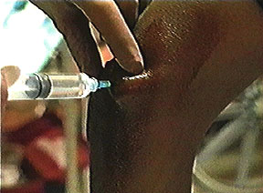
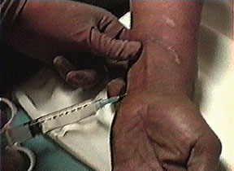

|
 An ulnar nerve block is performed at the Seattle Veterans Affairs Medical Center Pain Clinic (Movie, QuickTime, about 1.9 mb) |
Ulnar Nerve Block
At the Elbow
The ulnar nerve can be easily palpated the groove between the olecranon and the medial epicondyle. Flexion of the forearm on the arm accentuates the groove. A 25-gauge 3/4 inch needle is inserted at a point located 1 cm proximal to a line drawn between the olecranon and the medial epicondyle. Paresthesias are easily elicited. Three to 5 ml of local anesthetic are injected.
Since the nerve can potentially be compressed in the poorly compliant ulnar groove by the local anesthetic, injection of large volumes should be avoided. Blockade of the nerve just proximal to the ulnar groove, use of small gauge needles, and close attention to signs of intraneural injection may also help avoid injury.

At the Wrist
The ulnar nerve lies between the ulnar artery (medially) and the tendon of the flexor carpi ulnaris (laterally) at the level of the wrist. The needle is inserted at a point located between theses two structures immediately proximal to the ulnar styloid process. Three to five ml of local anesthetic should provide and adequate block. If paresthesias are difficult to elicit, local anesthetic can be injected in a fan between the the artery and the tendon.



ULNAR NERVE ANATOMY
 HOME
HOME